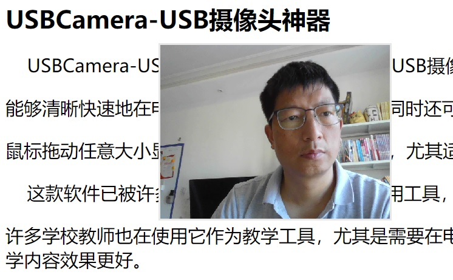

USBCamera-USB摄像头神器是一款可以显示USB摄像头图像的工具，它界面简洁大方，操作简单，
能够清晰快速地在电脑上显示USB摄像头内容。同时还可以灵活地设置显示图像或视频的大小，可以全屏显示，最小化显示，
鼠标拖动任意大小显示，鼠标滚轮调节缩放显示，尤其适用加摄像头录制培训视频的场景。
这款软件已被许多视频博主，培训大V列为必用工具，并受到大量好评和改进建议。不仅如此，
许多学校教师也在使用它作为教学工具，尤其是需要在电视或投屏的情况下需要让众多观众看到细节的场景。它极大地增强了教学效果，让教学内容效果更好。
说明：本软件仅供娱乐，学习使用。切不可用于商业目的。保护知识产权，人人有责。
作者：825772667@qq.com
=====================================
下载链接1： 点击下载1=====================================
下载链接2： 点击下载2=====================================
=====================================
版本修改记录：
V1.0：完成初始功能；
=====================================
关键词：
USBCamera
USB Camera
PC Camera
windows Camera
USB摄像头神器
USB摄像头
摄像头
电脑摄像头
培训录制摄像头
摄像头采集
使用指导视频：
使用效果：
